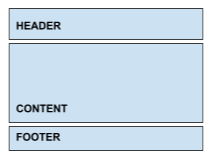
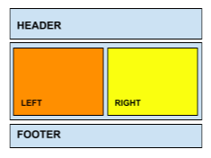

1-Relacionar las dos noticias elaboradas en el Práctico 1 - Parte I por medio de hipervínculos sobre el título de las noticias.
2-Relacionar una imagen o texto de una de las noticias a cualquier página de la Web utilizando un hipervínculo. El vínculo se debe abrir en una pestaña nueva.
3-¿Qué es el concepto Box Model y para qué se utiliza? ¿A qué tipo de páginas se aplica?
4-Comente las diferencias entre las partes de los contenedores/bloques (content, padding, border, y margin). ¿Cómo se calcula el tamaño total de un contenedor?
5-En Box Model existen elementos que contienen a otros. ¿Cómo influye en la indentación y escritura clara del código ?
6-Relacionar las dos noticias elaboradas en el Práctico 1 - Parte I por medio de hipervínculos sobre el título de las noticias.
7-Relacionar una imagen o texto de una de las noticias a cualquier página de la Web utilizando un hipervínculo. El vínculo se debe abrir en una pestaña nueva.
8-Cree una página que incluya diferentes divs. Asigne tamaños de los divs en pixeles (px), porcentaje (%). Experimente que sucede al cambiar el tamaño de la ventana del navegador y obtenga conclusiones.
9-Analice y experimente con los parámetros de los estilos escritos es https://codepen.io/webUnicen/pen/GeLeBZ . Concluya cómo influyen en ejemplo las propiedades margin, padding, border.
10-Mediante el uso de Box Layout diseñe el siguiente layout para una página:
11-Mediante el uso de listas, agregue una barra de navegación horizontal dentro del header del punto anterior.
12-Modifique el ejercicio 10 para lograr el siguiente layout:
13-Vuelva a diagramar el sitio de noticias del práctico anterior utilizando Box Model. Deberá tener un encabezado (donde puede ir un logo), una barra de navegación horizontal debajo del encabezado, el contenido donde van las noticias, una barra lateral para publicidades, y un footer con los datos del periódico.
Antes de comenzar, realice un esquema del layout con las posiciones y medidas deseadas.
14-En la página principal establecer tamaños de las fuentes con medidas relativas. La primer letra de los párrafos deberá ser el doble de la del párrafo. Los títulos de h1 a h4 deberán ir decreciendo su tamaño en un 20%.
14-Buscar en Wikipedia un tema de su interés y crear una página de contenido acerca del mismo que contenga un índice con al menos 5 links de referencia a la misma página (anclas, links locales).
15-Agregar un contenido a un div el cual desborde las dimensiones de altura. Pruebe las distintas alternativas de la propiedad overflow. ¿Qué alternativa usaría para una altura fija? ¿Y para una altura que puede variar?
16-Modificar el siguiente pen para darle un estilo particular al tooltip sin que se solape sobre el texto.
Extras: Considerar que no se solape con una línea inferior que también tenga tooltip. Sin cursor por encima: Con cursor por encima: https://codepen.io/webUnicen/pen/WpWovg
17-Agregar un menú horizontal de manera que permanezca fijo en la parte superior aun cuando en la página se realice scroll hacia abajo.
18-Agregar un pie de página que siempre quede en la parte inferior del navegador independientemente del largo del contenido. Esto es conocido como sticky footer.